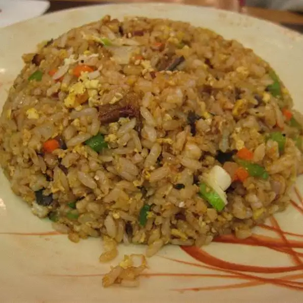

Easy Japanese Fried Rice

An easy to make fried rice dish
With simple ingredients and equally simple directions, Japanese fried rice is a must have
in your meal rotation. Made in just over an hour this is an easy choice either for
yourself or for when you have company. This recipe serves 8 but the amounts can easily be scaled
larger or smaller.
2 cups of jasmine rice
2 cups of chicken stock
1 1/2 cups of water
4 table spoons of butter
2 large eggs beaten
2 tablespoons vegetable oil
3 tablespoons sesame seeeds, or to taste
2 table spoons soy sauce
1/8 teaspoon salt
1/8 teaspoon ground black pepper